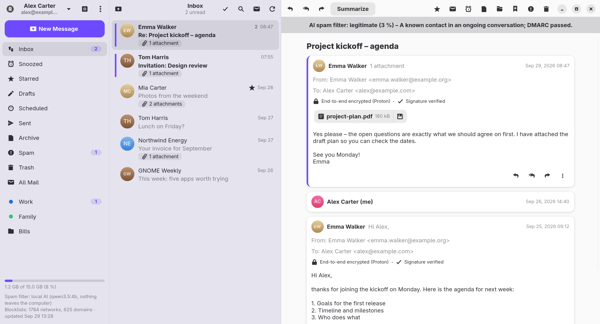

Klient
A mail client for GNOME with native Proton Mail support, PGP encryption and a spam filter driven by artificial intelligence – in the cloud or right on your computer.
Overview

KLIENT_DEMO=1 klient.Klient is a desktop mail application for Linux with the GNOME desktop. It connects directly to Proton Mail (without Proton Bridge) as well as to ordinary mailboxes over IMAP and SMTP. Every new message is judged by the spam filter first; only then is it shown and announced.
Several services in one window
Proton Mail, Gmail, Seznam.cz and any IMAP/SMTP mailbox, switched in the sidebar.
Encryption everywhere
Proton's end-to-end encryption and PGP/MIME for the other services, with automatic lookup of recipients' keys.
AI spam filter
SPF/DKIM/DMARC, blocklists and your own lists as evidence for the AI's decision.
AI assistant
Summaries, reply suggestions, “Ask Your Mail”, sorting into labels and a morning overview.
Local AI
The model runs on your computer through a managed Ollama – the content of your messages goes nowhere.
Comfortable sending
Undo send, scheduled sending, a rich-text editor and attachments.
Installation
From GitHub
On Fedora (44 and newer), install the latest version straight from GitHub with a single command:
sudo dnf install https://github.com/Imbecile6197/klient/releases/latest/download/klient.x86_64.rpmOn Ubuntu (26.04 LTS and newer), download the package and install it:
wget https://github.com/Imbecile6197/klient/releases/latest/download/klient_amd64.deb
sudo apt install ./klient_amd64.debKlient downloads later versions by itself – see Automatic updates.
You can open this documentation from Klient at any time: main menu → Help, or the F1 key.
Language
Klient speaks English and Czech. The language follows your system settings; you can change it in Preferences → General → Interface language, and it takes effect after a restart. The AI answers in the same language – summaries, reply suggestions, “Ask Your Mail” and the spam filter's reasons.
The package recommends the gnome-shell-extension-appindicator extension; without it, GNOME does not show the icon in the top bar.
Automatic updates
Once a day, Klient checks the releases on GitHub (not on a metered connection). It downloads a new version in the background and verifies its SHA-256 checksum, which must match both the SHA256SUMS file and the digest that GitHub reports. You then get the notification A New Version of Klient Is Ready; the Install button asks for the administrator password, installs the package and restarts Klient. The What's New button shows the changes before you install.
After an update, Klient shows what has changed since the version you used last. You can open the list again at any time from the main menu → What's New.
You can turn the check off or run it by hand in Preferences → General → Updates. A Klient built from source only announces a new version.
If Klient is running (for example in the background) while you install a new version by hand, it notices within a minute and offers a restart. You do not have to find it and quit it yourself.
Building from source
sudo dnf install golang gcc gtk4-devel libadwaita-devel gobject-introspection-devel webkitgtk6.0-devel
make build # the first build takes a while (CGo bindings of GTK)
make run
make install # into ~/.local, including the .desktop file and the icon
make rpm VERSION=0.7.3
packaging/deb.sh 0.7.3 # Ubuntu package, built in a podman containerAccounts and Services
You add the first account on the login screen and more accounts in the sidebar with the account switcher → Add Account. New mail, the spam filter and notifications work for all accounts at once, including those that are not open right now.
All accounts together
With two or more accounts, the account switcher offers All Accounts: the Inbox, Starred, Sent, Archive, Spam and Trash of every account in one list, sorted by time. Each message shows the address of its account, and everything you do with it – reading, replying, moving, deleting – happens in that account; a reply is written from it. A new message is written from the first account. Labels, snoozing, contacts and account settings stay in the individual accounts. Klient remembers the view for the next start.
Proton Mail
Klient logs in directly through the Proton API, including two-factor authentication and two-password mode. The password is not stored – only the session token and a derived key for unlocking the mailbox stay in the GNOME keyring.
Gmail
- Turn on two-step verification in your Google account (without it, Google does not offer app passwords).
- Create an app password – a button in Klient's login window opens myaccount.google.com/apppasswords directly.
- IMAP must be enabled in the Gmail settings.
- In Klient, choose Other Service → Gmail and enter your address and the app password.
Gmail labels behave as on the web: adding a label only tags the message (it stays in the inbox), and removing it takes off just the label. Archiving moves a message to “All Mail”, the “Starred” folder matches the star, and the “Important” folder is hidden.
Seznam.cz
Supported domains: seznam.cz, email.cz, post.cz, spoluzaci.cz and custom domains hosted at Seznam. If you have two-factor authentication turned on, create an app password in your Seznam account settings and log in with it.
Other mailbox (IMAP/SMTP)
Klient finds the servers by itself – from the known providers, the Thunderbird database (ISPDB) and the MX records of the domain. If that fails, you enter them by hand. When a login fails, the complete message from the server is shown.
Untrusted certificates. If a server's certificate cannot be verified (it has expired, is self-signed or was issued for another name), Klient shows its details – the reason, who it was issued to and by, its validity and the SHA-256 fingerprint – and lets you trust this certificate. Klient then accepts exactly that certificate for the server; if it changes, you are asked again. Verification is never switched off completely, because an unverified connection could be intercepted without any warning.
What each service supports
| Feature | Proton | Gmail | Seznam / IMAP |
|---|---|---|---|
| New mail right away | yes | IMAP IDLE | IMAP IDLE |
| Folders | yes | yes | yes |
| Labels | yes | yes | no |
| Threads | server | References | References |
| Searching the message text | no | yes | yes |
| Snoozing conversations | server | Klient | Klient |
| Scheduled sending | server | Klient | Klient |
| Encryption | Proton E2E | PGP/MIME | PGP/MIME |
| Address suggestions from | Proton contacts | recent addresses | recent addresses |
| Automatic reply | paid plan | no | no |
| Mailbox usage | yes | quota | quota or space used |
“Klient” means that the application itself provides the feature through the Snoozed and Scheduled folders on the server. It works while Klient is running (the background is enough); anything missed in the meantime is done right after it starts.
Reading Mail
- A three-pane layout (folders – list – message) that adapts to a narrow window.
- Threads – messages are grouped into conversations; on Proton, older messages of a thread are decrypted only when you expand them. You can turn this off in Preferences → Messages.
- HTML mail is shown through WebKitGTK without JavaScript. Remote images and tracking pixels are blocked; you can allow them for one message or permanently for a sender.
- Attachments appear as chips at the top of the message – a click opens the attachment, the arrow saves it.
- Search (Ctrl+F) – on Proton in the subject, sender and recipients; with IMAP services also in the message text.
- Offline reading – the latest 500 messages (adjustable) are kept in an encrypted cache (AES-256-GCM with the key in the keyring; bodies of Proton messages also stay PGP-encrypted).
- A mailbox usage indicator in the bottom left corner. If the server does not report a limit (Seznam), at least the space used is shown.
- Unsubscribe – a one-click button for mailing-list messages (RFC 8058).
- Printing and exporting a message to an
.emlfile.
Writing and Sending
- A rich-text editor – bold, italic, underline, lists, links. Recipients with PGP receive a plain-text version.
- Reply, Reply to All, Forward (including attachments).
- Attachments up to 25 MB – encrypted just like the text. You can drag files into the message.
- Drafts are saved automatically when you close the window (Esc) or by hand with Ctrl+S.
- A signature – plain text or HTML (Preferences → Messages → Signature → Format). Paste your HTML, open an .html file or start from a template; the preview shows it as recipients will see it. In a new message the signature appears as a preview you can remove with ×; recipients without HTML get a plain-text version.
- Address suggestions from your contacts.
- The default application for
mailto:links – set it in Preferences → General.
Spell checking
Misspelled words are underlined in red while you write; a right click offers corrections, Add to Dictionary and Ignore. Czech and English are checked together – a word is right in either – and the closest corrections come first. Quoted lines (“> …”), links, addresses and abbreviations are left alone. Klient uses the system dictionaries (packages hunspell-cs and hunspell-en-US); the personal dictionary is shared with other applications. It can be turned off in Preferences → Messages → Check spelling.
Send delay
After you send a message, it waits a moment (10 s by default) while a notification counts down with an Undo button. You set the length in Preferences → Messages.
Outbox
A message that cannot be sent is never lost: it goes to the Outbox, which appears under the folders while it holds messages. After a connection failure Klient sends it again by itself every minute; after another failure (for example a rejected recipient) you choose Send Again, Edit or Delete. The Outbox is kept in each account's encrypted cache and survives a restart.
Scheduled sending
The arrow next to the Send button offers presets (tomorrow morning, tomorrow afternoon, Monday morning) or a custom date and time. On Proton the server sends the message even when your computer is off; for the other services Klient sends it. Scheduled messages show a bar with a countdown and a button to cancel sending.
Organizing Mail
- Folders and labels – your own Proton folders and labels, IMAP folders and Gmail labels. You can drag messages onto folders and labels.
- Managing folders – right-click (or long-press) a folder in the sidebar: New Folder (a slash nests it, e.g. “Work/Projects”; on Proton it can be a label), Rename, Delete and Hide from the Sidebar. Hidden folders come back with Show Hidden Folders in the same menu.
- Emptying Trash and Spam – right-click Trash or Spam → Empty deletes its messages permanently. Preferences → General → Trash and Spam can do it automatically for messages older than 7 to 90 days, in every account.
- Star, unread, archive, trash.
- Selecting several messages – with the button, Ctrl/Shift+click or Ctrl+A.
- Snooze (Ctrl+H) – the conversation disappears and returns to the inbox at the chosen time.
Rules for incoming mail
In Preferences → Rules you create rules such as “when the Sender / Recipient / Subject contains a text, then…” with the actions move to a folder, add a label, mark as read or add a star. Rules are applied to new mail after the spam check; the menu item Apply Rules to the Inbox runs them on existing mail too.
Encryption and PGP
Proton Mail
Every message is decrypted and its signature verified. When sending, the strongest available protection is chosen for each recipient:
- Proton addresses – Proton's end-to-end encryption,
- external addresses with a known key – PGP/MIME, which keeps the formatting, the HTML signature and the attachments in one encrypted part. Klient uses the key published by the recipient (WKD), the key and settings pinned in your Proton contact (as on the web), or a key imported in Klient,
- everyone else – unencrypted, optionally with a PGP/MIME signature (the formatting stays), and a warning appears before sending.
Gmail, Seznam and IMAP
In Preferences → PGP you create a new key for the account or import your private key. The key file is locked with a random passphrase kept in the keyring. Then:
- messages to people with a known key are encrypted as PGP/MIME; messages to everyone else are signed,
- mixed recipients get two versions – an encrypted one and a signed one,
- with Encrypt the subject too the subject travels inside the encryption (protected headers, as in Thunderbird) and outside it reads “...”; your copy in Sent keeps the subject,
- drafts, scheduled messages and copies in Sent are stored on the server encrypted for you alone,
- incoming PGP/MIME messages are decrypted and verified, including a protected subject.
Your key:
- a new key gets a validity (1, 2 or 5 years, or none) – an expiring key stops being used by itself if you lose it; Extend… renews it any time,
- Publish on keys.openpgp.org… uploads your public key; after you confirm the link the server e-mails you, anyone can find it by your address,
- Save a Revocation Certificate… – keep it safe; if the key is lost or stolen, publish it or send it to your contacts and their apps stop using the key,
- the key can be backed up and removed.
Inline PGP
Messages encrypted right in the text (-----BEGIN PGP MESSAGE-----, e.g. from Mailvelope) are decrypted and their signature checked, also when the block is quoted in a reply.
Where Klient looks for recipients' keys
- the Web Key Directory of the recipient's domain – for stored keys again once a week, to notice a newer key,
- the Autocrypt header of received messages (Klient adds it to its own messages too),
- manually imported keys – also straight from an
.ascattachment with a button in the message, - optionally keys.openpgp.org (Preferences → PGP).
Contact keys and key changes
Preferences → PGP → Contact Keys lists the stored keys. Click one to see its full fingerprint (compare it with the contact in person or by phone), user IDs, validity and where it came from, and mark it as Verified.
When a different key shows up for a contact, Klient replaces the stored one only if it was learned automatically, is not verified and the new key is newer. Otherwise the new key waits: the message shows “The sender uses a new key…” and in the key's detail you choose Use the New Key or Keep the Old Key. A forged message therefore cannot swap a key you rely on.
Send only encrypted
With Preferences → PGP → Send only encrypted (or the same switch in the compose window, for one message) a message is not sent while some recipient has no key.
Your own public key can be attached to outgoing messages automatically (Preferences → Messages).
Spam Filter
The AI judges every new message in the inbox. As evidence it gets:
- the SPF, DKIM and DMARC results,
- Proton's markers,
- blocklist hits for IP addresses, domains and links,
- your lists of allowed and blocked senders.
A message whose spam probability reaches the threshold (0.7 by default) is moved to Spam. You set the threshold in Preferences → Spam Filter.
Check first, then notify
This applies to all services. While the check runs, a bar at the top of the list says “The spam filter is checking N new messages…”. If the check got stuck, the message appears after 6 minutes at the latest. You can turn this behaviour off with the Show new mail only after it is checked switch.
Blocklists
They are downloaded automatically every 12 hours: Spamhaus DROP (IPv4 and IPv6), URLhaus and OpenPhish. Their status is in Preferences → Spam Filter.
OpenPhish lists single phishing pages, so Klient compares whole links, not domains: one bad page on a link shortener or shared hosting does not block the whole site. A link to a page on OpenPhish or to a host on URLhaus makes the message spam whatever the AI says, even from an allowed sender – their accounts can be stolen too.
Checking existing mail
The menu item Check the Inbox with AI runs the filter on the latest 50 messages.
If you turn the AI filter off, Klient recognizes spam only by the blocklists and your lists.
AI Assistant
Features
- Message summary and reply suggestion.
- Editing and translating a draft right in the editor.
- Ask Your Mail (Ctrl+J) – a question in plain language; the AI finds the related messages and answers with references to its sources.
- Sorting into labels – new mail gets a suitable label (Preferences → AI → Automatic Features).
- A morning overview of unread mail at a set hour (7:00 by default); you can open it at any time with Unread Mail Overview (AI).
Providers
The assistant and the spam filter each have their own provider and model – a cheaper and faster model is usually enough for the spam filter. The list button next to the model offers the models available for your account.
| Provider | Default assistant model | Default spam filter model | Key |
|---|---|---|---|
| Claude (Anthropic) | claude-opus-5 | claude-opus-5 | platform.claude.com |
| ChatGPT (OpenAI) | gpt-5.5 | gpt-5.4-mini | platform.openai.com |
| Gemini (Google) | gemini-3.1-pro-preview | gemini-3-flash-preview | aistudio.google.com |
| Mistral (EU servers) | mistral-medium-latest | mistral-small-latest | console.mistral.ai |
| Local AI (Ollama) | qwen3.5:4b | qwen3.5:4b | not needed |
API keys are stored in the system keyring. When a provider returns an error (no credit, an invalid key, a retired model), Klient explains it in plain words and offers a link where you can fix it.
Local AI
With local AI, the model runs right on your computer and the content of your messages goes nowhere. The settings are in Preferences → AI → Local AI (Ollama).
- Install Ollama – Klient downloads the official version from GitHub, verifies its checksum and unpacks only the part for the processor into
~/.local/share/klient/ollama. No sudo is needed. - Compare Models on My Mail – each chosen model judges several of your messages and summarizes one, so you see speed and quality side by side. Everything runs on your computer.
- In the Assistant and Spam Filter roles, choose Local AI and the model you picked.
Offered models
| Model | Download | Note |
|---|---|---|
| Qwen 3.5 4B (Alibaba) | 3.4 GB | default |
| Gemma 4 E2B (Google) | 4.3 GB | |
| Gemma 4 E4B (Google) | 6.1 GB | better at Czech, needs more memory |
| Ministral 3 3B (Mistral AI) | 3.0 GB | |
| Ministral 3 8B (Mistral AI) | 6.0 GB | smarter, slower |
More options
- Local only – nothing is sent to cloud AI, even if keys are saved.
- Update automatically – checks for a new version of Ollama and the models once a day (not on a metered connection).
- Prepare summaries in advance – new mail is summarized in the background, only on mains power and when the model is idle. The summary is ready as soon as you open the message.
- AI results are cached, so summarizing the same message again is instant. On mains power the model stays loaded in memory for 30 minutes, on battery for 5 minutes.
Without a graphics card, a local model is slow: judging one message takes tens of seconds (about a minute with Qwen 3.5 4B on a laptop with a 10th-generation Intel i5).
Invitations and Away Replies
Calendar invitations
A message with an invitation (.ics) shows a card with the time and place. The Accept, Maybe and Decline buttons send your answer to the organizer; the event can be added to your calendar.
Automatic reply
Proton Mail with a paid plan only. The server replies even when your computer is off; each sender gets the reply at most once in a while. You set the subject, the text and, optionally, the last day.
Running in the Background
- After you close the window, Klient keeps running, watches for new mail and shows a monochrome icon in the top bar (GNOME needs the AppIndicator extension). A red dot on the icon means unread mail. The icon menu offers Open Klient, New Message and Quit; you can also quit with Ctrl+Q.
- Start after login – Klient starts straight in the background.
- You turn both on or off in Preferences → General → Background.
- The new-mail notification arrives only after the spam check. It has up to three buttons – by default Mark as Read, Archive and Delete; Spam is the fourth choice. You pick them in Preferences → General → Notifications.
Keyboard Shortcuts
The list is also available in the application: Ctrl+?.
| Shortcut | Action |
|---|---|
| General | |
| Ctrl+N | New message |
| Ctrl+F | Search |
| Ctrl+J | Ask your mail (AI) |
| Ctrl+Shift+K | Contacts |
| F5 | Refresh |
| Ctrl+, | Preferences |
| F1 | Help (this documentation) |
| Ctrl+? | Keyboard shortcuts |
| Ctrl+Q | Quit |
| Messages | |
| Ctrl+R | Reply |
| Ctrl+Shift+R | Reply to all |
| Ctrl+L | Forward |
| Ctrl+E | Archive |
| Delete | Move to trash |
| Ctrl+D | Star |
| Ctrl+H | Snooze |
| Ctrl+Shift+U | Mark as unread |
| Message list | |
| Ctrl+A | Select all messages |
| Esc | Cancel the selection |
| Writing a message | |
| Ctrl+Enter | Send |
| Ctrl+S | Save the draft |
| Ctrl+B / I / U | Bold / italic / underline |
| Ctrl+K | Link |
| Esc | Close (the draft is saved) |
Preferences
Open them with Ctrl+,. The pages are in the same order for all accounts.
| Page | What it contains |
|---|---|
| General | Interface language, default email application, running in the background and starting after login, emptying Trash and Spam automatically, notification buttons, updates |
| AI | Local AI (Ollama, Local only, updates, summaries in advance, model comparison), the provider and model for the assistant and the spam filter, API keys, automatic features (sorting into labels, morning overview) |
| Spam Filter | Turning the AI filter on, the threshold for moving to spam, showing mail only after the check, blocklist status |
| Messages | Threads, send delay, attaching your public key, spell checking, offline cache, signature |
| Rules | Rules for incoming mail |
| PGP | Your own keys (create, import, back up, remove), contact keys, searching keys.openpgp.org |
Privacy and Data
What is sent to the AI
- With a cloud provider, the content of the messages the AI processes is sent to it (spam filter, summaries, suggestions). The spam filter sends only the first 6,000 characters of the body.
- Requests to OpenAI are sent with
store: false. Mistral processes data in the EU. - With local AI or in Local only mode, nothing leaves your computer.
- Every AI request is recorded in the system log with the provider, the model, its size, duration and result – never its content. To see which models Klient really calls:
journalctl --user -g "AI request".
Where the data is
| What | Where |
|---|---|
| Settings | ~/.config/klient/config.json |
| Blocklists, filter decisions, keys, cache, Ollama | ~/.local/share/klient/ |
| Sessions, IMAP passwords, API keys, cache and PGP keys | GNOME keyring (Secret Service) |
Known Limitations
- The Proton API is not officially documented for third-party applications and may change. Proton may reject a login or ask for a CAPTCHA – then log in once on the web from the same network.
- On Proton, search does not cover the message text (the bodies are encrypted on the server).
- With IMAP services, snoozing and scheduled sending work only while Klient is running.
- With Gmail, Klient does not know which labels a message already has while you read the inbox – it learns that only in the label's folder.
- Outlook / Hotmail is not supported.
- Attachments are not stored in the offline cache.
- Rules are shared by all accounts (their target folders and labels belong to the account they were created in).
About
The source code is public on GitHub: github.com/Imbecile6197/klient (GPL-3.0 license). Bug reports and ideas are welcome in Issues.
Built with GTK4, libadwaita, WebKitGTK, go-proton-api, GopenPGP and the go-imap/go-smtp libraries.